The PA Digitale 2026 measures: implementation, results, sustainability and impact
- PA digitale 2026
- NRRP
- municipalities
- cloud
- national platforms
- ICT census
- open data
The PA Digitale 2026 measures, part of Italy's National Recovery and Resilience Plan (NRRP, in Italian PNRR), funded the adoption of digital platforms by municipalities, schools and other public bodies: PDND, pagoPA, the IO app, SPID and CIE digital identity, SEND notifications and the digital civil registry.
The following reading, which emerged from reflections prompted by a training session, was developed by analysing the available open data and public reports through four questions:
- Implementation: have the resources been committed and the work carried out?
- Results: what has been delivered?
- Sustainability: will public bodies be able to keep it running?
- Impact: what will change for territories and citizens?
Data on applications are updated to 17 November 2026.
1. Background: measures, platforms, statuses
The measures
PA Digitale 2026 brings together the calls of the Department for Digital Transformation under NRRP investment M1C1 1.1–1.7. For local authorities, nine sub-measures matter most:
| Measure | What it funds |
|---|---|
| 1.2 Cloud | Cloud enablement and migration of public bodies' services |
| 1.3.1 PDND | Publishing APIs on the National Digital Data Platform |
| 1.3.1 ANNCSU | Geo-referencing house numbers in the national street and address register |
| 1.4.1 Citizen experience | Websites and online services (informative and transactional) of municipalities and schools |
| 1.4.3 IO app | Public services on the IO app |
| 1.4.3 pagoPA | Payment collection services on the pagoPA platform |
| 1.4.4 SPID/CIE | Access to online services with digital identity |
| 1.4.4 ANSC/ANPR | Joining the National Civil Registry Archive |
| 1.4.5 SEND | Digital service of documents with legal value |
Two considerations
- Static view: the measures fund the digital enablement of public bodies towards citizens and users, who can now use digital services. Thanks to the measures, several types of service (back-office systems, online services, payments, messages, notifications) have been standardised across many administrations, especially municipalities and schools.
- Dynamic view: it now becomes possible to measure how citizens and users actually use digital services. That is the next step.
An example: the school canteen service
A single municipal service can use almost all the measures. Signing up for the school canteen, paying for it and, if needed, recovering unpaid fees involve seven different platforms:
| Step | What happens | Measure |
|---|---|---|
| T1 · Enrolment | ||
| 1–3 | The parent opens the service on the municipal website and logs in | 1.4.1, 1.4.4 SPID/CIE |
| 4–5 | Fills in the form, which is recorded in the local information system | 1.4.1, 1.2 Cloud |
| 6–7 | The system requests and receives the ISEE (means test) from another administration | 1.3.1 PDND |
| 8–9 | The amount due for the year is created | 1.4.3 pagoPA |
| 10–12 | The municipality confirms the enrolment, also with a message on the IO app | 1.4.1, 1.4.3 IO app |
| T2 · Payment | ||
| 1–3 | The logged-in parent checks the amount due | 1.4.1, 1.2 Cloud |
| 4–7 | Starts the payment; outcome, reconciliation and confirmation | 1.4.3 pagoPA |
| T3 · Debt recovery | ||
| 1–2 | The municipality starts recovery and sends a digital notification | 1.4.5 SEND |
| 3–4 | The citizen also receives a courtesy notice on the IO app | 1.4.5 SEND, 1.4.3 IO app |
| 5 | If the digital notification fails, a paper notice is sent by post | 1.4.5 SEND |
Application and project statuses
On the PA digitale 2026 platform each request goes through a sequence of statuses: first as an application, then, if funded, as a project. The grant is paid only at the end, once the project has been checked.
| Status | What it means | Typical timing |
|---|---|---|
| Application | ||
| Pre-draft, draft, completed | The body fills in the application and generates Annex 3 for signature | |
| Under review | Signed Annex 3 submitted to the Department | By the call deadline |
| Admitted | Eligible given available funds and order of arrival; the body can enter the CUP project code | Within 5 days |
| Accepted | The body entered the CUP code in time | |
| Funded | Included in the funding decree | About two months after acceptance |
| Project | ||
| To start, started | The body signs contracts with suppliers | Within the deadlines of the call |
| Under technical review | Work completed, waiting for technical certification | Depends on the measure (longer for 1.2 and 1.4.1) |
| Completed | Technical certification passed | |
| Under formal review | The body uploads the certificate of proper execution and the payment request | A couple of months, due to the Mission Unit's queue |
| In settlement | Formal certification completed | About one week |
| Paid | Funds transferred to the body's treasury | |
| Negative outcomes | ||
| Not admitted, not accepted, not funded, cancelled, expired | The application stops before funding | |
| Withdrawn, revoked | The body withdraws from the project, or the project is revoked (missed deadlines, NRRP requirements not met) | |
The platforms and the Territorial Team
Those who follow the projects work every day with a few platforms (all in Italian): Indice PA for the public bodies' registry, PA digitale 2026 to manage the measures, the CUP system for the unique project code (guides on OpenCUP), ANAC for the CIG tender code, and the AgID platforms.
Over these four years, the Territorial Team, which reports to the Department for Digital Transformation (DTD) of the Presidency of the Council of Ministers (and which I had the honour of being part of), has supported public bodies through every stage (application, contracting, completion, formal checks) and, for municipalities, has managed the assessments, often service by service. Note: the work followed a «portfolio» logic, in which what counts is the number of public bodies, not of citizens or users. The Territorial Team also carried out the certifications (technical acceptance tests) on bodies it did not directly support, for greater impartiality and independence.
Back to top2. Implementation
Have the resources been committed and the work carried out?
The overall picture
Resources have been assigned and largely already paid out: 94% of the amount. The grant is a lump sum paid after the result has been checked, so the amount paid out measures completed work, not just spending.
- 74,639projects funded, net of 18,855 withdrawals
- €2.59 bngranted to public bodies, of which €2.44 bn paid out
- 16,847beneficiary bodies, of which 7,891 municipalities
- 99.9%of Italian municipalities have at least one active project
The calls from 2022 to 2025
50 calls for the nine sub-measures, concentrated in 2022 and reopened until the last useful year.
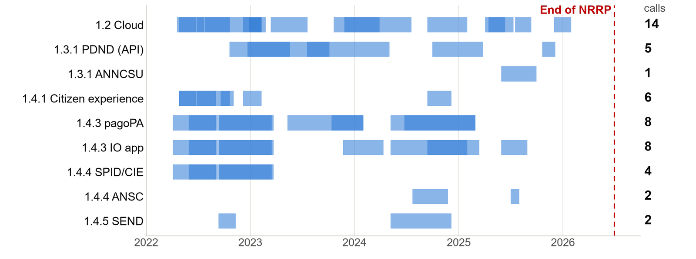
Including measure 1.1 (central administrations and health authorities), the Department published 57 calls:
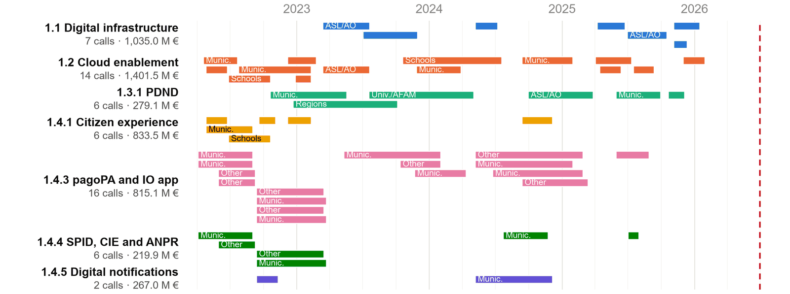
Allocation, calls and payments
The calls cover 97–98% of the allocation for Cloud and Citizen experience, but only 43% for 1.3.1. These data do not explain the gap: the allocation may include other interventions (for 1.4.4, ANPR too).
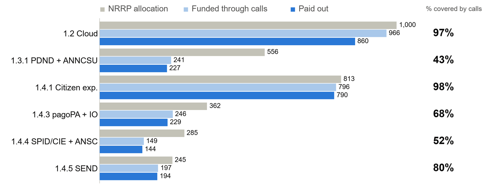
Project status
92% of withdrawals concern the 2022 calls, and in 79% of cases the body has another active project on the same measure: it often withdrew to apply again.
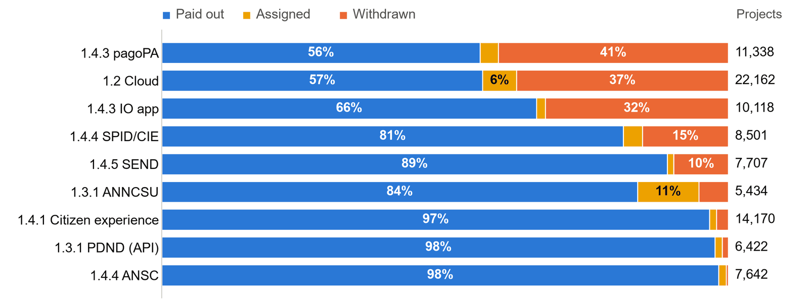
The pace of payments
The curves differ: ANSC and ANNCSU only start between late 2025 and 2026, while Cloud is at 89% of the amount.
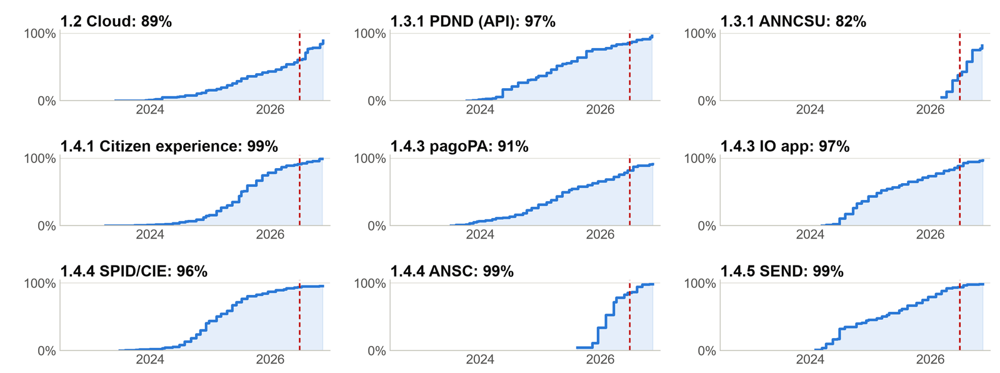
Coverage of municipalities
The median municipality takes part in 8 out of 9 measures; only 5 municipalities have no project.
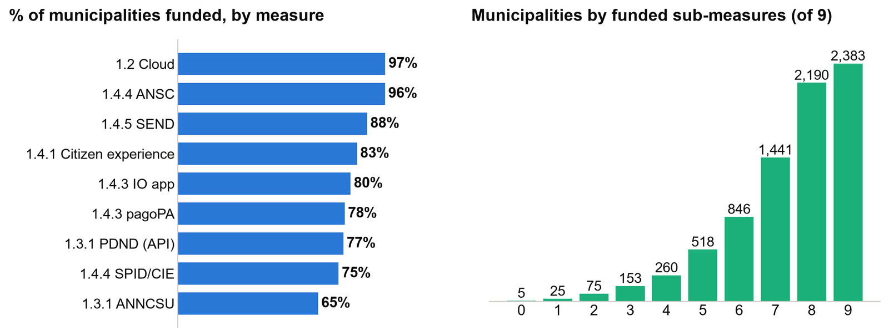
Municipalities funded, by region
Take-up is high everywhere, with a few exceptions worth investigating. In Friuli Venezia Giulia the low values for Cloud, pagoPA, the IO app and SPID/CIE might reflect services provided at regional level: this is an unverified hypothesis.
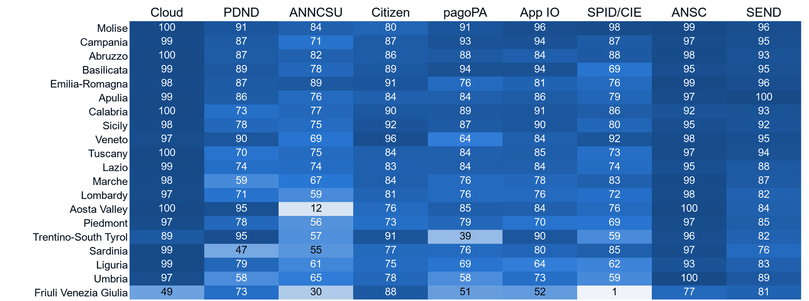
3. Results
Which services, opportunities and benefits have actually been delivered?
What has been delivered
Standardised digital services in 71,460 completed projects, that is, projects whose grant was paid after the result was checked.
| Measure | Funded result | Completed projects | Paid out |
|---|---|---|---|
| 1.2 Cloud | Services migrated to the cloud | 12,548 | €859.8 M |
| 1.3.1 PDND | APIs published on PDND | 6,272 | €193.8 M |
| 1.3.1 ANNCSU | Geo-referenced house numbers submitted | 4,563 | €32.9 M |
| 1.4.1 Citizen experience | Websites and digital services of municipalities and schools | 13,702 | €789.9 M |
| 1.4.3 pagoPA | 158,033 payment collection services activated | 6,368 | €162.3 M |
| 1.4.3 IO app | 173,238 services activated on IO | 6,690 | €66.4 M |
| 1.4.4 SPID/CIE | Access to online services with SPID and CIE | 6,927 | €97.0 M |
| 1.4.4 ANSC | Digital civil registry in municipalities | 7,512 | €47.1 M |
| 1.4.5 SEND | Digital notifications activated | 6,878 | €194.3 M |
From funding to use
National data on use, which also include bodies that were not funded; for 1.2, 1.4.1 and 1.4.4 they count instead the bodies with a completed project. Sources other than open data are given in the note.
- 1.2 Cloud12,433bodies with services migrated to the cloud: 7,397 municipalities (94%) and 4,834 schools (59%); over 107,000 services migrated
- 1.3.1 PDND15,285e-services published by 6,519 bodies, 11,651 by municipalities, out of 9,794 members; 54,833 active connections and 889 M requests in 2026
- 1.3.1 ANNCSU76%house numbers with coordinates (data at 15/09/2026); 5,063 municipalities update them through the archive's APIs on PDND: over 23 M calls
- 1.4.1 Citizen experience13,347websites using the Designers Italia template: 6,551 municipalities (83%) and 6,796 schools (83%); 25,570 municipal digital services
- 1.4.3 pagoPA448.7 Mtransactions in 2025
- 1.4.3 IO app98%municipalities present on IO, with 244,112 services; 396 M messages sent in 2025 (all bodies)
- 1.4.4 SPID/CIE6,922bodies with SPID and CIE integrated: 5,736 municipalities (73%) and 1,186 other bodies; 1.22 billion SPID logins in 2025
- 1.4.4 ANSC98.6%municipalities with digital civil registry; over 700,000 digital records created (April 2026)
- 1.4.5 SEND19.5 Mnotifications in 2025, 7,145 sending bodies
For 1.2, 1.4.1 and 1.4.4 the figure does not measure use: it counts the bodies whose project was completed, that is, checked at certification. For 1.4.1 the website was checked against the Designers Italia template criteria; the digital services («active citizen» package) are derived from the amounts paid out using the price list in the calls' Annex 2: 6,317 municipalities activated at least one, most of them four. For 1.2 the migrated services are estimated the same way: 34,428 for schools and 73,184 for 6,563 municipalities; for the other 834 municipalities (mostly 2024–2025 calls) and for health authorities and other bodies the amount does not allow an estimate. For ANNCSU the calls are the PDND tokens issued for the Revenue Agency's «Aggiornamento coordinate» and «Aggiornamento accessi» e-services. For IO the messages are those of all bodies, not only municipalities. For ANSC there are no open data on records: the figure is reported by Agenda Digitale (9/4/2026). For PDND the data (Numeri PDND, 17/11/2026) cover all members: 6,519 bodies provide e-services and 8,583 use them; access requests are the tokens issued, January to 17 November 2026. For 1.4.4 the call funds SPID and CIE together (€14,000 per municipality), so the projects do not distinguish the two credentials; use can be measured only for SPID, through the annual logins published by AgID (public and private services), while there is no overall public figure on CIE logins. Percentages of 7,896 municipalities (ISTAT) and 8,171 state schools (Indice PA, October 2026). The latest ISTAT figure on cloud use by local authorities is 54%, for 2022.
Cloud: the starting point
ISTAT 2022: 54% of local authorities. With the NRRP, 94% of municipalities have completed their cloud migration. The latest official figure on use is still the ISTAT 2022 one, before the effects of the NRRP projects; the 2026 ICT census will give the first post-NRRP picture.
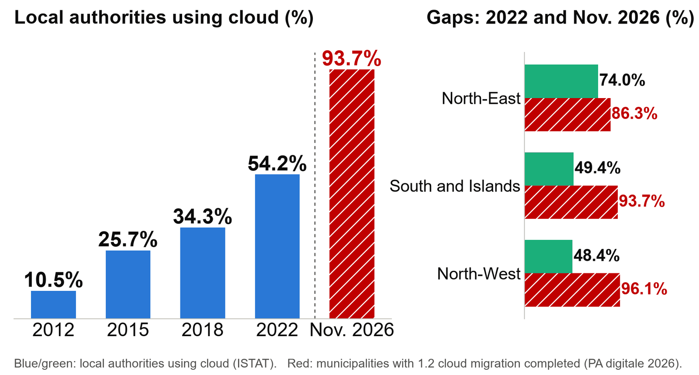
- Politecnico di Milano, AssoSoftware, 202368%municipal bodies with all back-office software in the cloud (a different measure from ISTAT)
- PA digitale 2026, measure 1.2, November 202694%of municipalities and 59% of schools with cloud migration completed
The three figures measure different things and cannot be compared. ISTAT counts local authorities using cloud services. The Politecnico counts municipalities with all back-office software in the cloud, but the press release does not state the base. The PA digitale 2026 figure counts municipalities and schools with a completed 1.2 project, that is, with at least one service migrated and checked at certification: it measures take-up of the NRRP, not use.
PDND: members and data exchanges
9,794 bodies have joined, with about 78 million data exchange sessions per month.
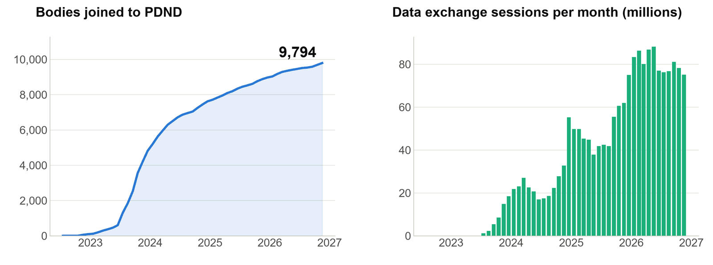
ANNCSU: geo-referenced house numbers
76% of house numbers have coordinates: almost all are in funded municipalities, and the coordinates mostly come from existing databases rather than field surveys.
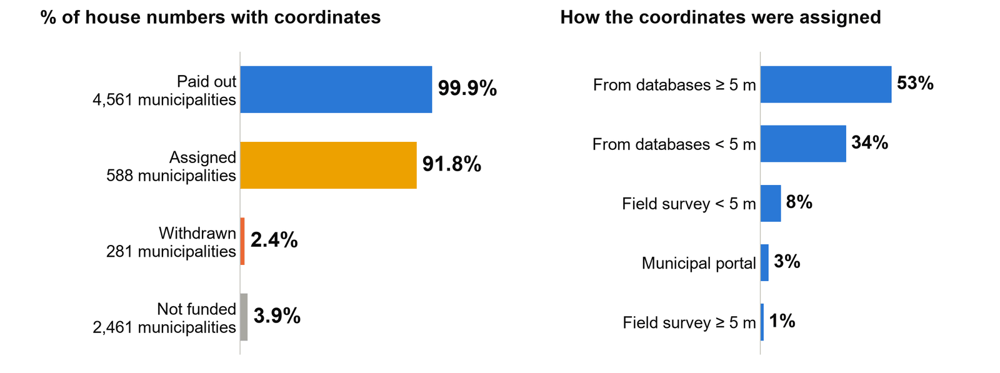
pagoPA: transactions
448.7 million transactions in 2025; municipalities are the third-largest category of creditor bodies.
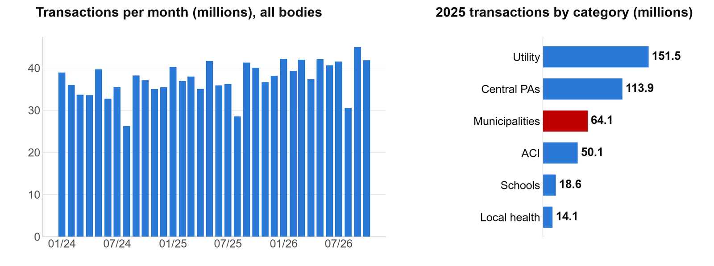
The IO app: messages
396.4 million messages in 2025, with 98% of municipalities present on the app.
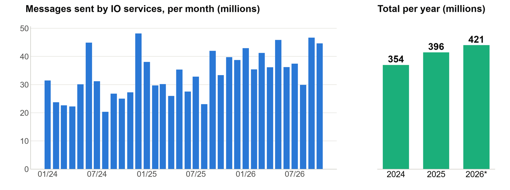
SEND: notifications
Notifications are growing, but in 2026 72% are still sent on paper.
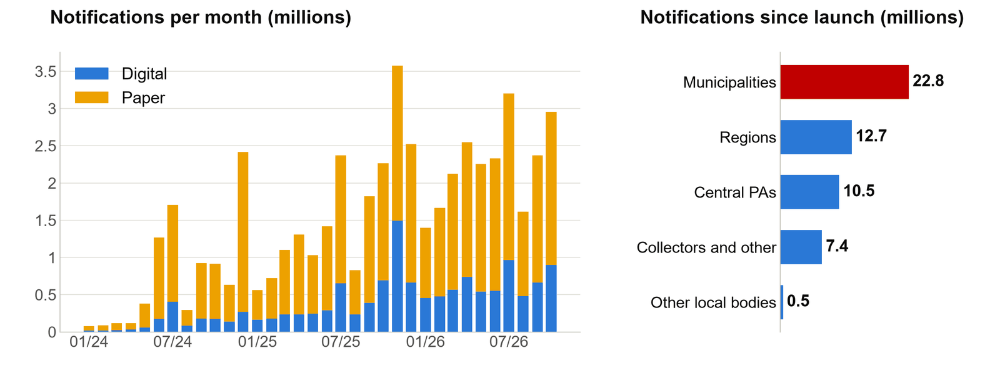
Digital identity: SPID and CIE
SPID is used more than a billion times a year to log in to online services, public and private: 1.22 billion times in 2025 (AgID). There is no overall public figure for CIE: the only open data cover logins to ANPR services, where the electronic identity card (CIE) is growing fast but SPID remains dominant. There are no open data by body on SPID and CIE logins.
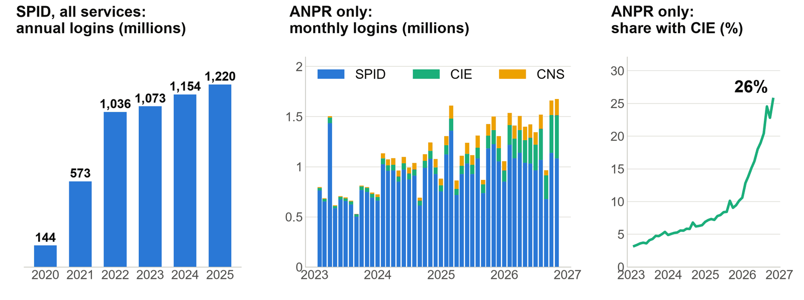
ANSC: the digital civil registry
98.6% of municipalities have joined, mostly between 2025 and early 2026.
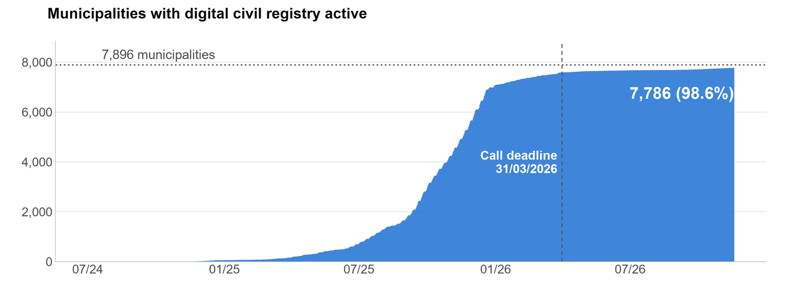
4. Sustainability
Will local authorities be able to sustain the results over time?
The NRRP pays for the start, not for running costs
The grant is one-off and results-based. Who will pay the recurring costs after the NRRP?
| What the grant covers (from the calls) | What remains to be covered (hypothesis to be checked) |
|---|---|
| A results-based lump sum, paid once after verification. It funds migration, integration and activation. For municipal cloud services it covers the subscription fee for the first year only. | Cloud fees from the second year, licences and maintenance of back-office systems, supplier support, in-house skills. For ANSC, the grant is revoked if the service is not used continuously. |
The left column reports what the calls' Annex 2 documents state; the right column is a working hypothesis, to be checked against the 2026 ICT census.
How much the NRRP weighs on small municipalities
€99 per inhabitant below 5,000 inhabitants, €9 in large cities. These figures do not measure municipal budgets: it remains to be seen whether this translates into recurring costs that are harder to bear.
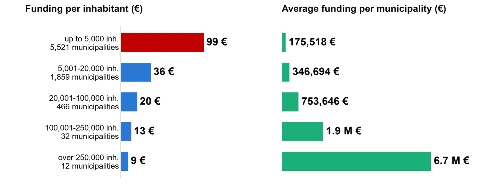
The 2026 ICT census will measure it
The census of public-sector ICT assets, run by AgID with the Department for Digital Transformation, will collect exactly the data that are needed. Deadlines as of 30/10/2026: 10 November 2026 for central and local administrations and health authorities, 1 December 2026 for schools, universities, research bodies and AFAM. No date has been set yet for the results.
| Sustainability question | Data expected from the census |
|---|---|
| Are the skills there? | Planned and actual ICT staff (FTE), presence of the digital transition officer (RTD), use of AI |
| Are the resources there? | 2025 ICT spending (CAPEX and OPEX) and 2026–2028 forecasts |
| How heavy are recurring costs? | Software licences, cloud purchases, framework agreements |
| Do services stay in the cloud? | Migration status by service, model, suppliers |
| How much infrastructure remains? | Owned data centres, decommissioning, energy consumption |
The ICT census: from 2017 to today
The first edition (2017–2019) covered data centres only; the new three-yearly edition looks at organisation, infrastructure, services and spending.
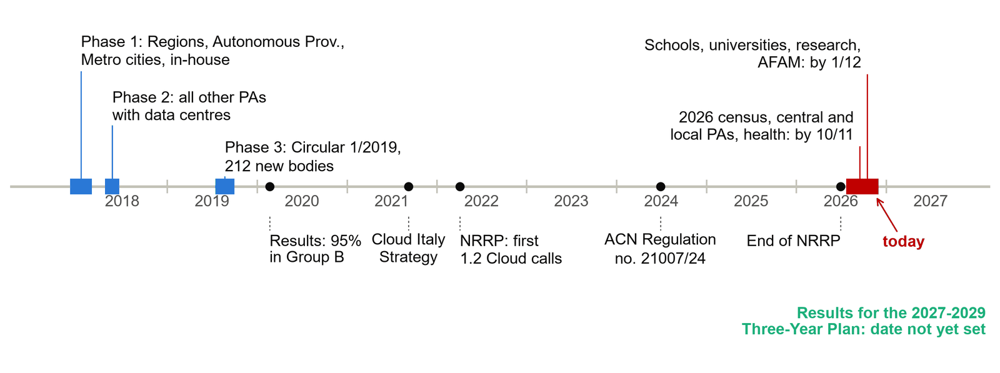
| 2017–2019 census | 2026 census | |
|---|---|---|
| Scope | Data centres of public administrations | Organisation, infrastructure, services and ICT spending |
| Bodies | 990 participating bodies, 1,252 data centres | All central and local administrations, health, schools, universities |
| Method | Three phases, AgID circulars, certified e-mail to the person in charge | A single survey on PA digitale 2026, partly pre-filled |
| Outcome | Classification: eligible for the National Strategic Hub (PSN), Group A, Group B (95%) | Map of services, cloud migration, spending and forecasts |
| Use | Rationalising data centres and migrating to the cloud | 2027–2029 Three-Year Plan and investment beyond the NRRP |
The 2026 questionnaire has three sections: organisation (ICT office, transformation plan, RTD, use of AI), infrastructure and services (data centres, digitisation and cloud migration of each service, suppliers) and ICT spending (operating and investment costs, licences, cloud purchases). It is filled in on the PA digitale 2026 reserved area and confirmed with a statement signed by the legal representative or the RTD.
Back to top5. Impact
What lasting changes will there be in territories and in citizens' lives?
Use of the platforms is growing
A positive sign, but not attributable to the funded projects alone: the data are national. SPID still exceeds a billion logins a year, but in the first nine months of 2026 it fell by 10% on the same period of 2025, while CIE logins are growing: 265.8 million «Entra con CIE» logins by the end of September 2026.
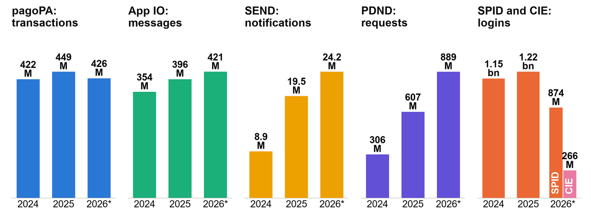
Territories: widespread take-up
The South often takes part more than the North: a good sign, but taking part does not mean use. In 2022 ISTAT reported cloud use by 49.4% of local authorities in the South and Islands and 74.0% in the North-East.
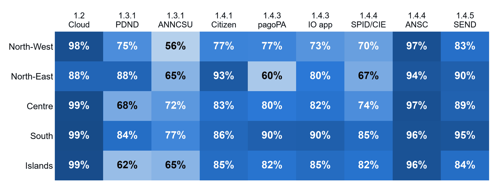
From adoption to impact
The next step is to measure actual use, which today is only available in aggregate form. The indicators below are a working proposal.
| Level | Proposed indicators | Available today |
|---|---|---|
| Use | Transactions, messages and notifications per body and per inhabitant | Aggregate only, not by body |
| Experience | Procedures completed online, times, satisfaction | No open data |
| Efficiency of the body | Postal notifications avoided, collection costs, times | Notifications only, in aggregate form |
| Inclusion | Use by age, territory and size of municipality | No open data |
| Durability | Services still active and used after the end of the NRRP | To be built |
6. References and notes
All data come from open, publicly available sources (mostly in Italian). Data extraction, processing and presentation were supported by artificial intelligence tools. Usage indicators are national or aggregate and also include bodies that were not funded.
Open data (downloaded on 18 November 2026)
- PA digitale 2026, calls and funded applications (at 17/11/2026): implementation, results, small municipalities, territories.
- Numeri PDND (PagoPA S.p.A.): members and exchange sessions.
- PagoPA S.p.A. open data: pagoPA, IO app, SEND.
- ANPR open data (Ministry of the Interior): ANSC membership, logins by credential.
- AgID, SPID and SPID open data: annual SPID logins to online services.
- Digital Identity & Wallet Observatory, Politecnico di Milano (press release, 5/11/2026): SPID and CIE identities and logins as of September 2026.
- Agenda Digitale, 9/4/2026: municipalities joined to ANSC and digital records created.
- ItaliaOggi, 6/11/2026, data from the Digital Identity & Wallet Observatory of Politecnico di Milano: SPID and CIE logins in the first nine months of 2026.
- ANNCSU, national address file (15/09/2026): geo-referenced house numbers.
- ISTAT, list of Italian municipalities and resident population at 1/1/2022.
Documents and reports (consulted up to 2 November 2026)
- Annex 2 of the PA digitale 2026 calls: services, amounts, rules, costs covered.
- NRRP financial plan, ReGiS data at 26/02/2026, CGIL elaboration: allocations by investment.
- ISTAT, Local public administration and ICT – Year 2022 (23/02/2024).
- Politecnico di Milano Observatories and AssoSoftware, press release of February 2024.
- PA digitale 2026, ICT asset census (page updated on 30/10/2026); ReTeDigitale (23/07/2026); Agenda Digitale (2026).
- Docs Italia, ICT census (criteria of the third phase and AgID Circular 1/2019) and Sinet (21/02/2020): results of the 2017–2019 census, taken from secondary sources because the AgID website was under maintenance on 2 November 2026.